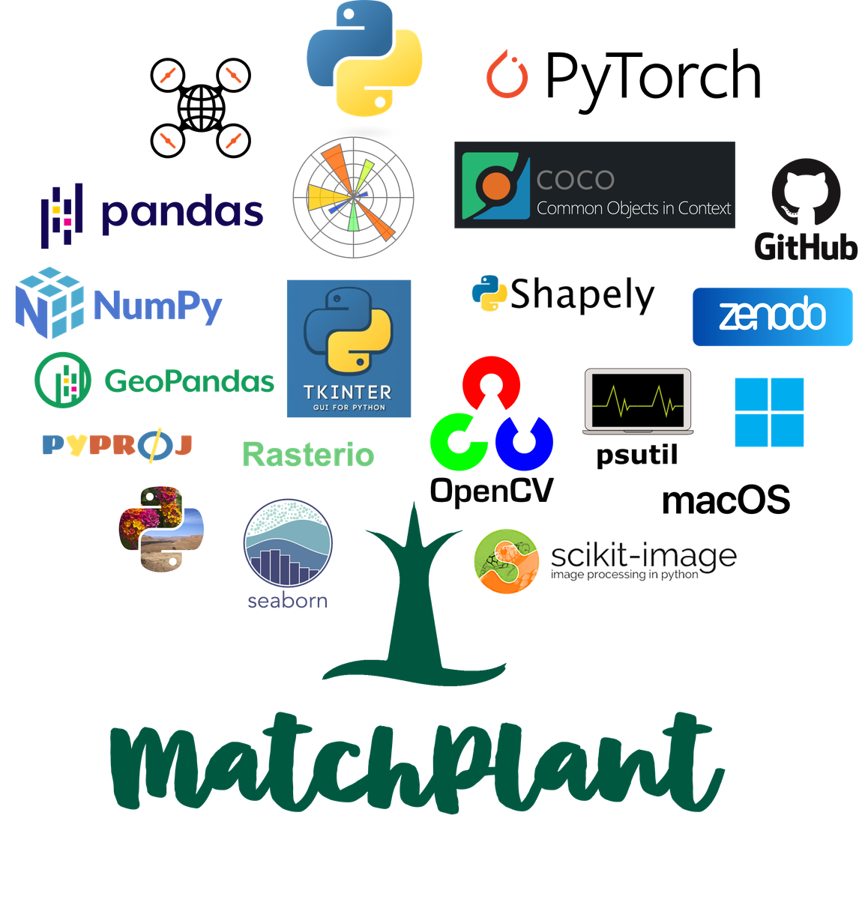

Prepare imagery
Embed GPS data, locate control points, and generate an orthomosaic.
- 0GPS Embedder
- 1GCP Finder
- 2ODM Runner
Detect individual plants in UAV imagery and locate results on an orthomosaic. Explore the research, then run MatchPlant on your own computer.
Use the modules you need, in a pipeline that connects field imagery to spatial data.
Embed GPS data, locate control points, and generate an orthomosaic.
Select, annotate, tile, and split UAV images.
Train from scratch or fine-tune a model, then evaluate detections.
Project detections and extract spatial traits.
11 tools across four stages. The two training routes at step 6 are alternatives; use whichever fits your data.
Desktop windows for the steps that need a human in the loop, from marking ground control points to extracting plant statistics.
The dashboard opens in your browser. Processing and native GUI tools run on your machine.
setup.command once.start_dashboard.command whenever you want to use MatchPlant.setup.bat once.start_dashboard.bat whenever you want to use MatchPlant.Local dashboard: It opens automatically at 127.0.0.1:5050 after you start it.

Sangjan, W., Pandey, P., Best, N. B., & Washburn, J. D. (2026). MatchPlant: An Open-Source Pipeline for UAV-Based Single-Plant Detection from Undistorted Images with Orthomosaic Projection. Smart Agricultural Technology, 15, 102421.